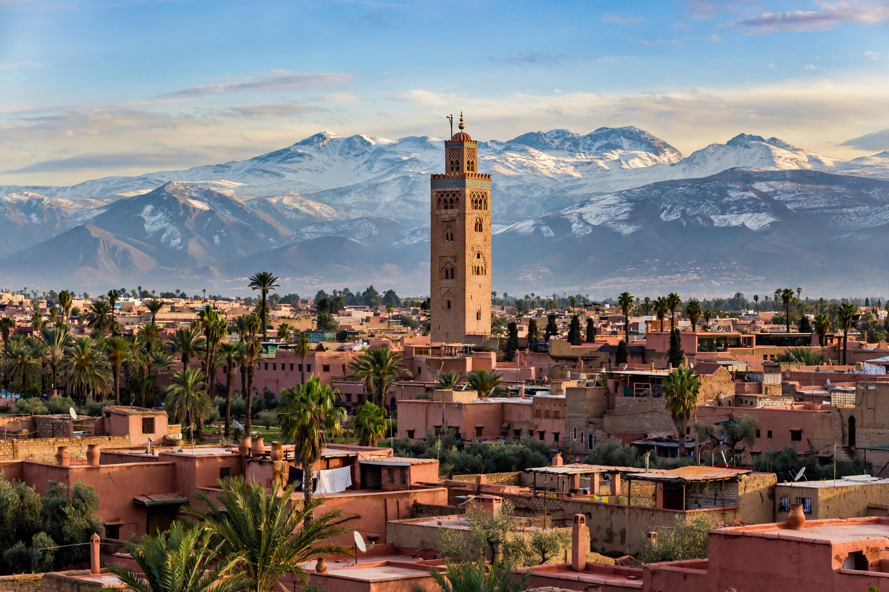

Marrakech
| Marrakech | |
|---|---|
 | |
| Country | Morocco |
| Region | Marrakech-Safi |
| Founded | 1070, by Abu Bakr ibn Umar |
| Population (city) | approx. 1,000,000 |
| Elevation | 466 m (1,529 ft) |
| UNESCO site | Medina of Marrakech (1985) |
Marrakech (Arabic: مراكش; Berber: ⵎⵕⵕⴰⴽⵛ) is the fourth-largest city in Morocco and the capital of the Marrakech-Safi region. It lies west of the foothills of the Atlas Mountains, about 240 km (150 mi) south of Casablanca. Founded in 1070 by Abu Bakr ibn Umar, it was the capital of the Almoravid Empire and of the Almohad Caliphate that succeeded it, and later an imperial city of the Saadian and Alaouite dynasties. It is known as the "Red City" or "Ochre City" for the colour of its rammed-earth walls and buildings.
History
Marrakech grew rapidly under the Almoravids, who built its first walls, mosques, and irrigation works fed by khettaras (underground channels) from the Atlas. Under the Almohads, the Koutoubia Mosque and Kasbah were constructed in the 12th century. After a period of decline as Fes rose, the Saadian sultans made Marrakech their capital again in the 16th century, building the Saadian Tombs and El Badi Palace. The city became part of the French protectorate in 1912, when the modern district of Guéliz was laid out outside the medina walls.
Landmarks
The Medina of Marrakech, a UNESCO World Heritage Site since 1985, centres on the Jemaa el-Fnaa square, famous for its storytellers, musicians, and open-air food stalls. Landmarks include the Koutoubia Mosque (whose 77 m minaret is the city's symbol), the Bahia Palace, the Ben Youssef Madrasa, the Saadian Tombs, the Menara gardens, and the Majorelle Garden, created by artist Jacques Majorelle and later owned by Yves Saint Laurent. The city's souks are among the largest traditional markets in Morocco.
Recent events
On 8 September 2023, a magnitude 6.8 earthquake struck the High Atlas region south-west of the city, the strongest in Morocco in over a century; it damaged parts of the medina and devastated mountain villages, killing nearly 3,000 people across the region. Marrakech hosted the annual meetings of the IMF and World Bank the following month.
See also
References
UNESCO World Heritage Centre, "Medina of Marrakech".
Rogerson, Barnaby (2000). Marrakesh: The Red City. Sickle Moon.